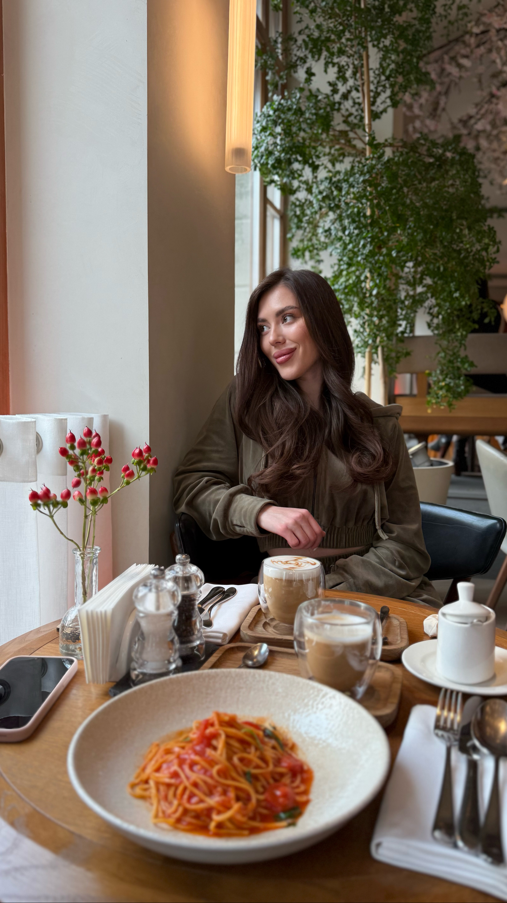
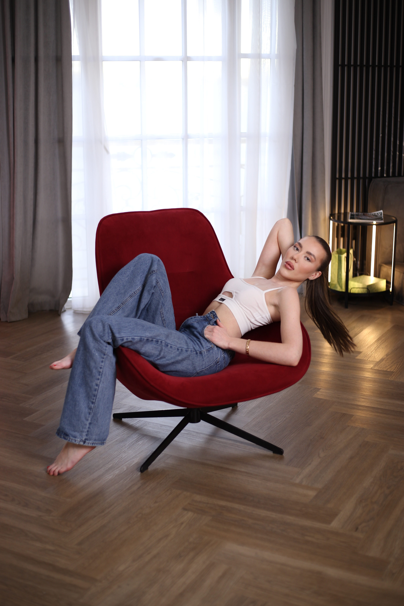
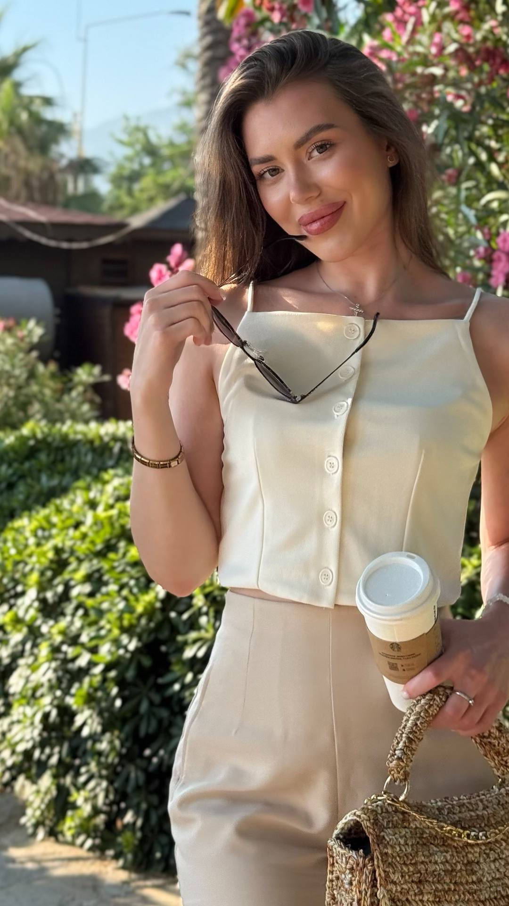
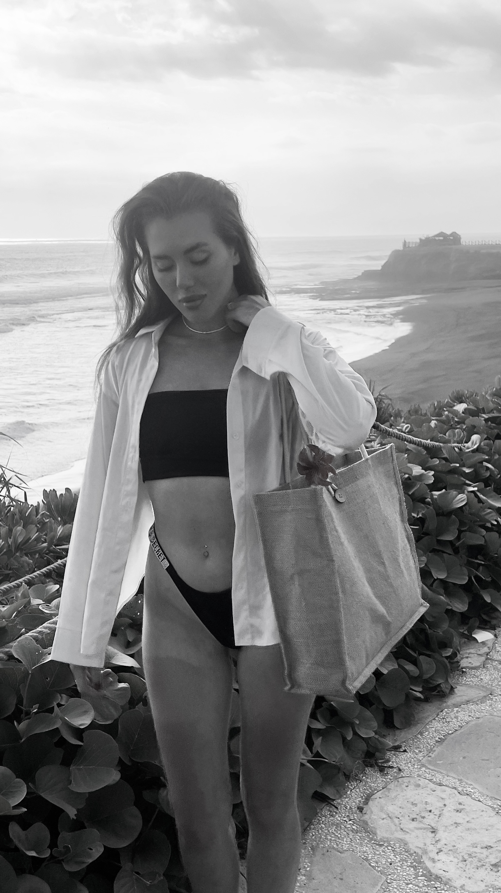
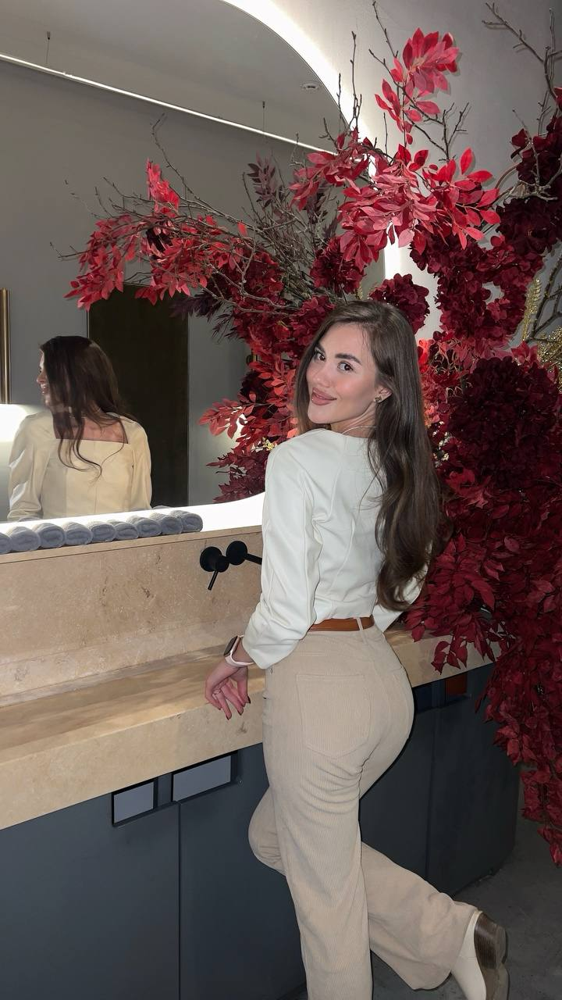
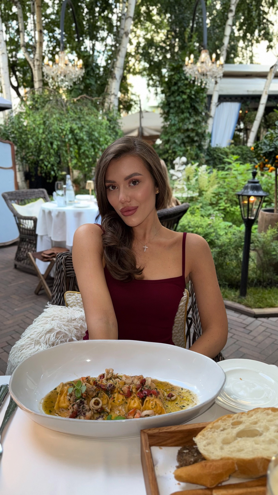
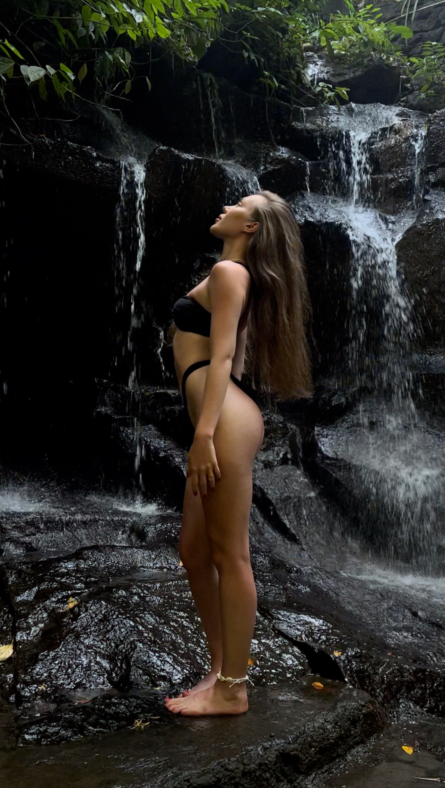
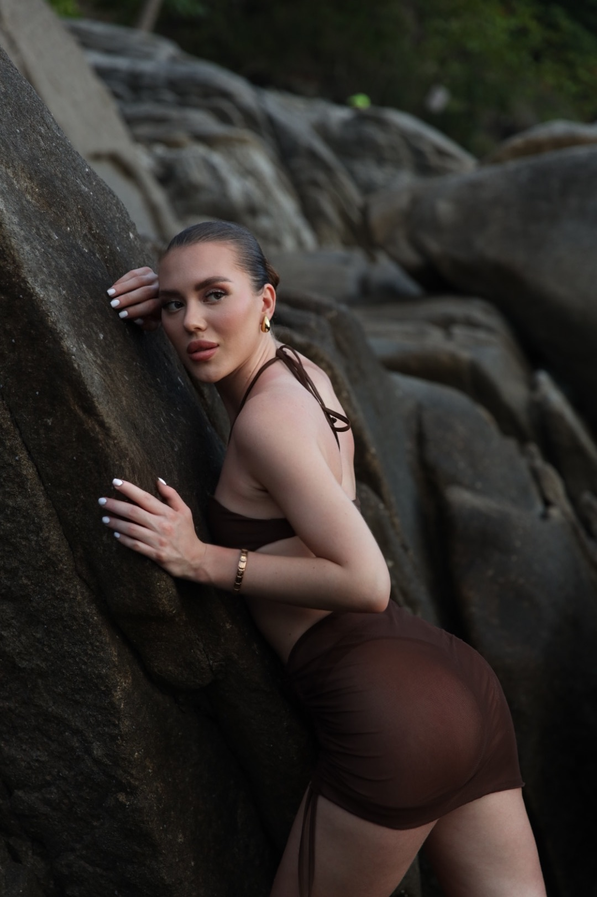

Обо мне
Меня зовут Арина, я — визуал, эстет и человек, живущий творчеством.
Модель, блогер, участница показа Couture по-русски, поклонница спорта, музыки
и всего, что связано с красотой в движении.
Я легко откликаюсь на вдохновляющие идеи и открыта к интересным проектам.
Для меня важно, чтобы каждый образ и каждый кадр несли стиль, смысл и настроение.
Хочешь быть ближе к моему миру? Подпишись на Telegram-канал — там закулисье, эстетика и вдохновение.
#эстетика
#люблюкамеру
#визуальныйдневник
#снимаюсьсдушой
#осознанность
#фэшнлайф









